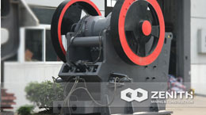

products Click to view more products
Sand Making Machine
Our sand making machine has the characteristics of beautiful appearance, convenient operation, high efficiency and energy saving.
-

S Cone Crusher
For higher productivity, better reliability and flexibility, longer service life, and better final product quality, the S cone crusher is your best choice absolutely.
-

Portable Crusher
Portable crusher is not limited by the working site, and reduces high transportation cost. It can crush materials on site or nearby. It is very suitable for dealing with open-pit mines.
-

PEW Jaw Crusher
PE series jaw crusher is usually used as primary crusher in quarry production lines, mineral ore crushing plants and powder making plants. It can be described as obbligato machine in mining, building construction
quarry crusher Click to view more quarry crusher
-
Portable Crusher
Portable crusher, also called portable crushing plant, is Zenith's newly-developed mining equipment, the design of which aims to overcome the obstacles.
- 
PEW Jaw Crusher
Nowadays,the PEW Jaw Crusher in European style undoubtedly becomes the most welcome equipment as the crushing machinery.
-
Sand Making Machine
Sand making machine is widely used in many fields of mining, building materials, highway, bridge, coal, chemical industry, metallurgy, refractory material etc.
-
PFW Impact Crusher
PFW impact crusher often used in the secondary crushing and fine crushing. It is very suitable for open-pit crushing in quarries.
-
PE Jaw Crusher
PE jaw crusher is widely used in fields of mining, metallurgy, construction, smelting and chemical industries etc. As for the processing materials.
-
HCS Cone Crusher
HCS hydraulic cylinder cone crusher is a new and efficient crusher based on our twenty years' experience in the crushing industry.
-
HP Cone Crusher
HP cone crusher belongs to a kind of high-tech crusher to meet the requirements of developed countries. HP cone crusher adopts computer optimization design.
-
PF Impact Crusher
Generally speaking, the PF series impact crusher is a good choice in the stone crushing and sand making industry. Compared with hammer crusher.